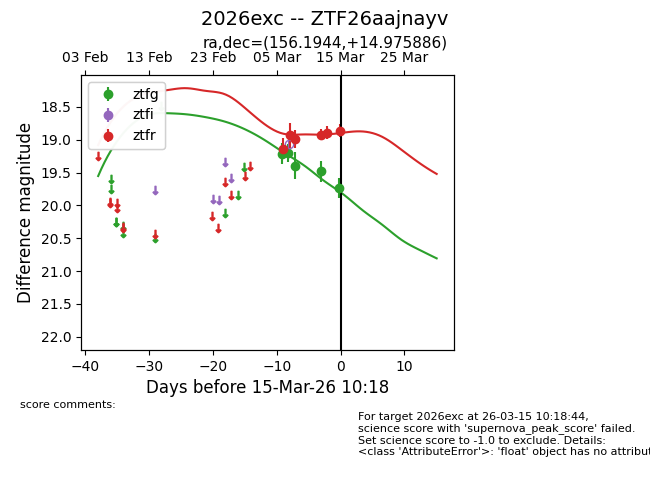
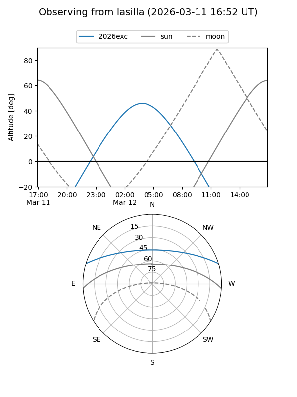
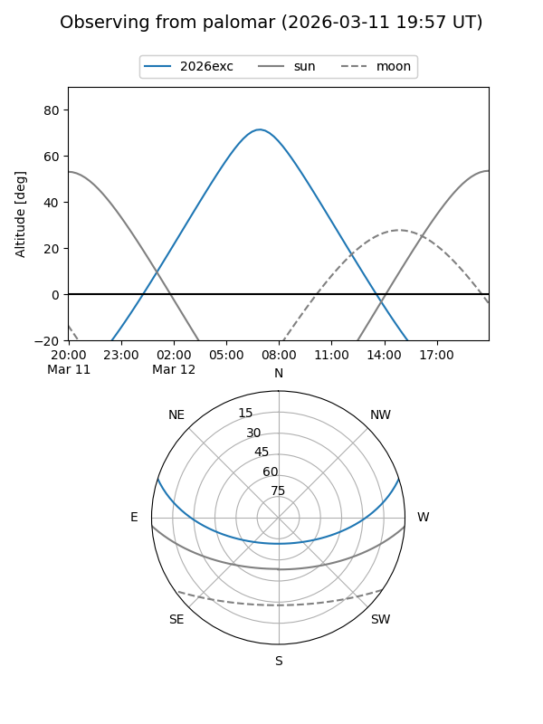
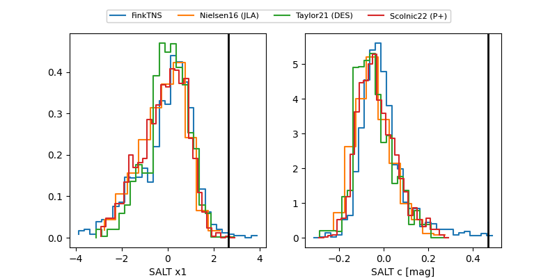

2026exc
Target 2026exc at 2026-03-15 10:21
Aliases and brokers:
FINK: link
Lasair: link
ALeRCE: link
TNS: link
YSE: link
alt names
ZTF26aajnayv (ztf,fink_ztf)
2026exc (tns,yse)
Coordinates:
equatorial (ra, dec) = 156.1944,+14.97589
equatorial (HMS+DMS) = 10:24:46.66,+14:58:33.19
galactic (l, b) = (225.0024,+53.85038)
Flags:
Photometry:
last ztfg=19.74, ztfr=18.86
5 ztfg, 6 ztfr detections
Lightcurve

Visibility


Additional plots
